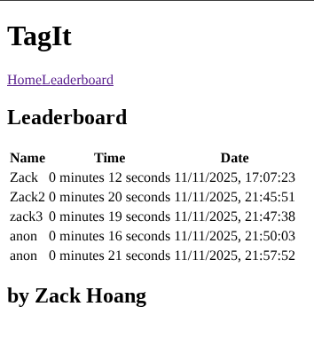

Tag It
This project was a practice project from The Odin Project. If you have never played Where's Waldo/Where's Wally, here's how it work: in a picture filled with countless of characters, you must find Wally and any other specified characters as fast as possible. Traditionally you can play this on specific books, but the web allows you to build something like this too!
Front End
Tools
- Vite: front end build tool
- React Router: single page application routing
- Testing Library: family of testing libraries for front end projects
- DOM Testing Library: test the DOM
- jsdom: an environment for test files to run HTML
- Vitest: testing framework for Vite
- React Testing Library: testing library for React components
Features
- Let player select their game
- Time tracking starting when the game first loaded
- Selecting characters that players found
- A success/error message when a character is found
- Score logging
- View leaderboard
Game Selection
Game data is loaded from the back end, which is then served to client side.
Time Tracking
We can build a simple timer that counts up in React
Character Selection
Characters could be and coordinate would be tracked from the top
left corner as (0, 0). Then, characters could be
selected and a message would appear.
If a character is successfully found, a success message shows up.
Otherwise, a fail message would appear instead.
Score Logging
Once the player is finished, a form will appear for them to log
their score in. This form optionally takes in the player's name. If
no name is provided, their name will be anon by
default.
Players can also view the leaderboard
Back End API
"Other than a database connection, why a seperate back end even?" - Because other than logging users score, a back end is useful for other reasons:
- Prevent score cheating: clients can modify the source code on the front end and just submit a fake score. To prevent this, we can calculate the total time on server side!
- Checking characters coordinates: you don't want the clients to know the exact coordinates, do you? Throw that in the database!
- Checking for found characters: This could arguably done on front end as well but to keep things simple, we can make use of users' session to store their character found data (it's just a few booleans check...)
Tools
- ExpressJS: JavaScript backend framework
- Express Validator: sanitize and validate user-provided input
- PostgreSQL: database
- Prisma: Object Relational Mapper (ORM)
- Cloudinary API: image storage
Routes
To facilitate this process, I created a few routes in my API in which that my front end app can interact with.
/games: fetch a list of game data to client-
/games/{id}: fetch the game's picture and any characters that needed to be found. At the same time, log user's epoch time when reached this route into their session data. -
/games/{id}/{name}: receive a character's coordinates on client side, normalize them and compare them to existing coordinates saved in the database.- If a character is found, mark them as found and return a success message
- If not, return a fail message
- If a character is already found, return an already found message
-
/total-time: returns a player's total time in minutes and seconds, converted from miliseconds since epoch. Save this total time into their session data. If a player's start time could not be found, an error message will be sent back. -
/score: receive player's name in JSON. Save their name into the database as well as their total time that was saved from/total-timeroute -
/leaderboard: view all records of users who have completed the game.